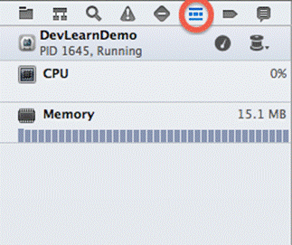
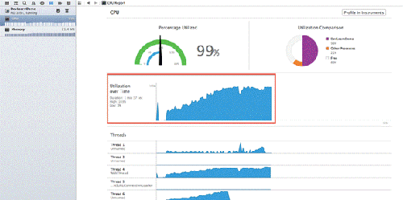
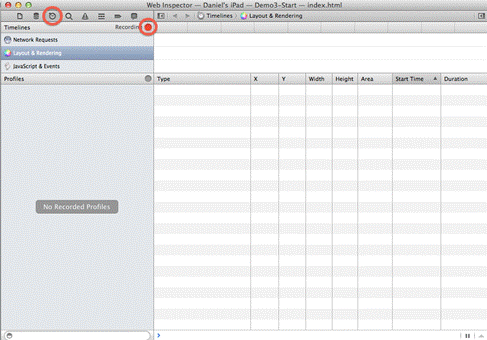
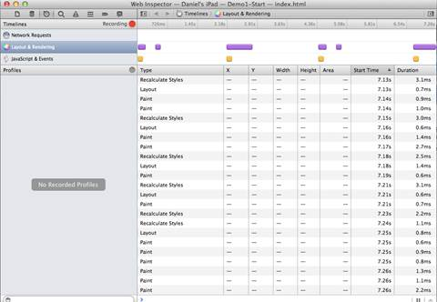
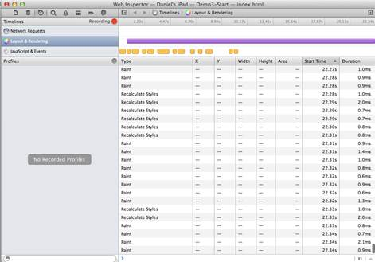
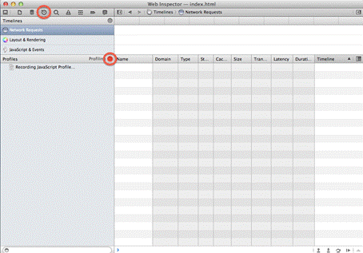
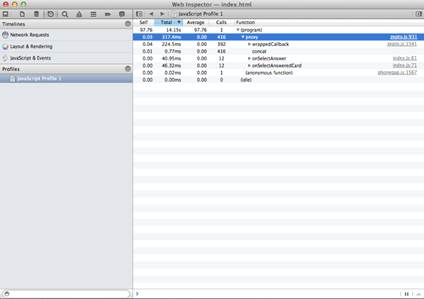
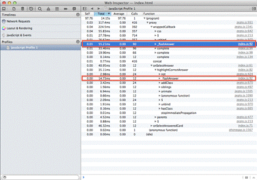
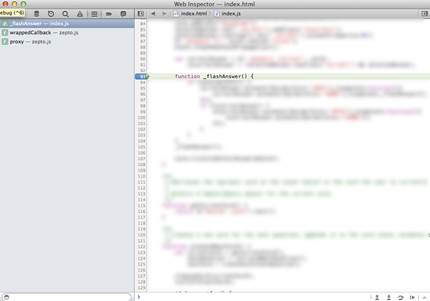

三種協助你最佳化 PhoneGap 應用程式效能的工具－為跨平台行動裝置 App 建立一個更好的使用者經驗

◎本文翻譯自 Float Mobile Learning，原作者為 Daniel Pfeiffer︰https://floatlearning.com/2013/10/3-tools-to-help-you-optimize-your-phonegap-apps-performance/
當你的 PhoneGap app（註）因為你不知道的原因越跑越慢時，你該怎麼辦？
這是每一個行動裝置開發者所需要面對的問題──你的應用程式運行速度降低，並終將一蹶不振。
但到底是為什麼呢？你牢記著所有讓 PhoneGap App 更好的基本準則，但仍未得到你所希望的使用者體驗。你自認為你的應用程式並沒有那麼複雜。如果像 Infinity Blade III 那樣的遊戲都可以執行得相當順暢，你的動畫只是簡單滑動，應該要很順暢才對。所以，你會如何做呢？開始對它進行一連串仔細又煩人的檢查、然後猜測、再驗證？也許吧。
但在你開始這麼做之前，讓我們使用一些工具評估我們的應用程式。
測量 (Measuring) 是一個重要的原則──我也會在即將到來的 DevLearn 演說「如何開發更好的 PhoneGap 應用程式」中提到這個部份。
建立成功的應用程式很大一部份與你測量的指標有關。使用率分析得到的數字當然是個明顯的分析指標，但是使用者體驗的測量也一樣重要。
有一些工具能協助衡量我們的應用程序和突顯問題。
*註： PhoneGap 為一套 Nitobi 公司開發、被 Adobe Systems 收購的開放源碼的行動裝置開發框架。
測量CPU使用率
CPU 花了多少時間在管理應用程式上，就表示它有多少 的 時間沒辦法回應使用者的需求。
預設的情況下，JavaScript 在你的應用程式中和處理使用者互動的程序共用一個執行緒 (thread) 。我們可以嘗試用插件在背景讓執行緒／佇列來分擔這項工作，但在正式開始之前，我們可以先進行風險評估確保 CPU 的負擔沒有比我們預期的多。
至於 Xcode 5 的部份，Apple 已經提供一套相當有用的除蟲工具，能提供我們當前系統資源分配的概要，其中也包含了 CPU 使用率。既然在裝置上可以隨時存取這些工具，可以練習養成一個良好習慣，每次在裝置上除蟲時就頻繁地去監測這些數據。

這只是個運行結果的概要檢視。它們的目的是為了開發過程中可能增加的新問題提供快速指引。你可以注意到，實裝一個新功能之後圖形呈現如下：

隨著時間的推移，應用程序的 CPU 使用率繼續上升，即便應用程序只是在等待與使用者互動，但還是持續的消耗。除了我們預期 CPU 閒置但它其實正在忙碌這件事情之外，這個結果並沒有告訴我們更多資訊，但我們隨即知道 CPU 的高負載可能是因為以下事件： 1. 也許有一些 JavaScript 程式碼卡在一個執行中的迴圈。 2. 也許渲染引擎 (Rendering Engine) 一直在進行它並不需要做的大量運算、佈局（遇到 reflow）或者繪製圖形。
使用Safari的遠端網頁檢查器
Safari 瀏覽器的遠端網頁檢查器，可以與運行在一台已連接的 iOS 上設備的 Webkit 程序接合，並且可以讓我們取得一些檯面下的有用資訊。在我們開始之前，我們需要做一些設定。
注意：如果你在開發者目錄中找不到你的裝置，試著離開並重新啟動 Safari。
你可以在網頁檢查器 (inspector) 由左數來第三個頁籤開啟時間軸工具去檢查網路需求、佈局、渲染或是執行 JavaScript 所花費的時間。

一般來說，你應該看到類似於下列圖片的呈現：

當使用者與你的應用程式互動時（以黃色表示之事件），它可能會要求介面以某種方式去回應，觸發 (triggering) 新佈局和渲染事件（以紫色呈現）。時間軸下方的表格顯示了實際在瀏覽器運作的佈局工作。大塊的白色區域則表示了網頁等待使用者回應的閒置時間。
但是，如果說你看到類似像下圖這樣的呈現：

在進行一些使用者互動後，甚至在使用者與應用程式已經完成互動後的十秒鐘，你的應用程式還持續大量地佈局和渲染。
依據應用程式不同，這可能是可以預期的，也許你的應用程式透過一個動畫序列運作。
這結果可能會讓你驚訝。如果你正因為你的應用程式焦躁不安，因為你預期它應保持閒置，那麼現在當你看到這樣的圖示，你就知道它出了什麼事情。可能你對它的問題已經有了一點靈感。如果是這樣，恭喜！現在你已經分離出那些不需要的佈局和渲染工作之問題，可以開始進行修改你的程式，重新計量測試你的假設。
你可能還是不確定那些部分的程式碼是不好的。所以讓我們來看下一個工具。
使用 JavaScript 數據量表 (JavaScript Profiler)
不幸地，JavaScript 探查並無法在裝置使用遠端檢查時執行（至少現在還不行）。 但是，你仍然可以在電腦上運行的 Safari 瀏覽器得到非常實用的資訊。（用最樂觀的態度來看待你的電腦──如果有一個問題在那裡顯示出來，那麼它肯定會在設備上顯示出來）。
在時間軸工具的正下方，你可以啟動 JavaScript 分析器。(它也包含了一個CSS選擇器的配置文件，但我們不會討論這部分)

注意：在進行分析之前請確定關閉所有的頁籤，因為他似乎會從所有已開啟的視窗及頁籤中捕捉 JavaScript （例如：Gmail 或 Facebook）。
你應該一個時間僅專注於一個問題。同時執行多個動作將會導致些問題。
一旦你停止分析器，它將讓你一窺究竟是哪個 JavaScript 的功能和行列那些花費最多時間才完成。

你要開始專注於花費最多時間的項目，特別是要密切防止你自己的程式出現這樣的情況。
如果你有使用 JS 函式庫（例如 jQuery 或 Zepto ），你可能會看到它出現數次，並通常靠近於頂部。這（通常）不是因為它執行得相當緩慢，而是因為你的程式可能多次呼叫這些函式庫。現在，專注於你的程式碼上。
那個「 Self 」欄位指出每個函數實際花費的時間量。而總合時間評估出完整函數所需要花費的時間量，包含從其他函數所呼叫的部分。
當你往下探索，你將會開始發現你有許多行程式碼佔用了大量的總合時間——你沒有預期到這些函數需要花費如此多時間。

而這裡就是我們要替程式除錯的地方。如果我們忽略這函數的所有呼叫將會有什麼改變嗎？函數哪個部份消耗掉最多時間，並且我們該如何減輕它？
你可以設置中斷點來停止一個函數內的執行動作，以便在執行路徑上獲得更深入的觀察。事實上，中斷點甚至可以在一個真實的裝置上遠端除蟲。

全面觀
所有的這一切，都是為了爭取最好的用戶體驗。我們在這裡所做的事情與在本地應用程序的開發和除錯過程沒有什麼不同（它並不需要不同！）。我們測量的目標是節省花費在猜測和檢查的時間，以便在這些問題真的存在時，能夠更精確地找出問題。
再一次提醒，「測量」是開發更好的 PhoneGap 應用程式時的許多重要步驟之一。
如果你有興趣取得更多別人的摘要，你可以檢閱在 DeyLearn中 我的章節部分，星期五早上8:30。期待你的參與！